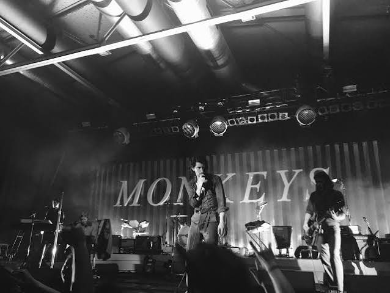

Arctic Monkeys are an English rock band formed in Sheffield in 2002. The band is known for songs such as “Do I Wanna Know?”, “505,” and “R U Mine?”. Their music combines rock, indie, and alternative sounds, and their style has changed over the years. Arctic Monkeys have become one of the most popular British rock bands, with fans around the world.
The band consists of Alex Turner, Jamie Cook, Nick O’Malley, and Matt Helders. Alex Turner is the lead singer and guitarist, while the other members contribute guitar, bass, and drums. Their first album, Whatever People Say I Am, That’s What I’m Not, was released in 2006 and quickly became a major success.
Over time, the band experimented with different musical styles, moving from energetic indie rock to more atmospheric and experimental sounds. Their changing style has helped them stay interesting to listeners and has contributed to their lasting popularity. Arctic Monkeys continue to have a strong influence on modern rock music and remain an important band in British music.

This picture was taken to promote the release of their 7th album, The Car.
This picture was taken the first night of the band's two-night run in Berlin, Germany.

Alex Turner is the lead singer and guitarist of Arctic Monkeys. He is known for his distinctive voice, songwriting, and guitar skills. He also writes most of the band's songs.

Matt Helders is the drummer and backing vocalist of Arctic Monkeys. He is known for his energetic drumming and has been with the band since it was formed.

Jamie Cook is the guitarist of Arctic Monkeys. He is one of the band's founding members and is known for his guitar playing and contribution to their sound.

Nick O'Malley is the bassist and backing vocalist of Arctic Monkeys. He joined the band in 2006 and has been an important part of their music ever since.